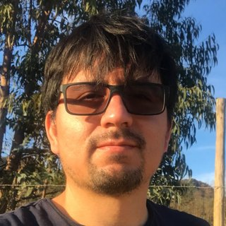

Quiénes somos
Investigadores, colaboradores, estudiantes y graduados; intereses de investigación y trayectoria
Investigadores

Colaboradores
Estudiantes y graduados
Intereses de investigación
El grupo desarrolla la línea de Sistemas Dinámicos del Instituto de Matemáticas de la Pontificia Universidad Católica de Valparaíso, orientada a la descripción del comportamiento asintótico de sistemas desde un punto de vista topológico, geométrico, métrico o probabilístico. Sus intereses incluyen sistemas (parcialmente) hiperbólicos, sistemas no uniformemente hiperbólicos, sistemas con descomposición dominada, dinámica no arquimediana y compleja, teoría de la dimensión, geometría hiperbólica y grupos discretos que actúan sobre espacios de curvatura negativa. El trabajo del grupo abarca además dinámica simbólica, estados de equilibrio, exponentes de Lyapunov, entropía topológica y teoría de bifurcaciones.
Trayectoria
El grupo tiene su origen en el seminario permanente Dinámica Porteña, iniciado en 2008 en el Instituto de Matemáticas de la Pontificia Universidad Católica de Valparaíso y consolidado a lo largo de cerca de veinte años como un espacio estable de colaboración científica. En ese período el seminario ha mantenido un archivo continuo de charlas (2008–2026) y ha incorporado minicursos y seminarios de estudiantes.
La formación de investigadores se realiza a través del Programa de Magíster en Matemáticas de la Pontificia Universidad Católica de Valparaíso y del Programa de Doctorado en Matemática, desarrollado en consorcio con la Universidad de Valparaíso (UV) y la Universidad Técnica Federico Santa María (USM); la diseminación se canaliza mediante actividades dirigidas a estudiantes y comunidades escolares.